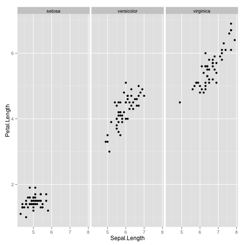

To explore the 'IRIS' dataset and train a classifier(s) to predict the species of a plant when provided with certain attributes (eg. petal length ..)
Dhruv K Pant
Bioinformatics Scientist
To explore the 'IRIS' dataset and train a classifier(s) to predict the species of a plant when provided with certain attributes (eg. petal length ..)
Explore the IRIS dataset This is a small dataset with 150 rows and 5 columns. The figure explores two parameters, petal length and sepal length for the 3 plant species.

The link below displays the Shiny App. Here, the user can input various parameters (petal length ,..) and a choice of classifiers (Random Forest, Naive Bayes) to predict which type of plant corresponds to the chosen parameters.
Conclusions - Two classifiers (Random Forests and Naive Bayes) have been developed and deployed over a Shiny App to enable web based prediction of plant species. One finds that the two classifiers do not always agree in their predictions.
Additional work could include adding more classifiers (as drop down options) and some measure of the accuracy of the classifiers.